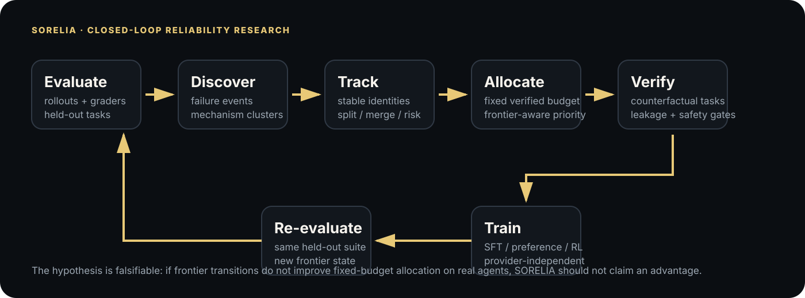
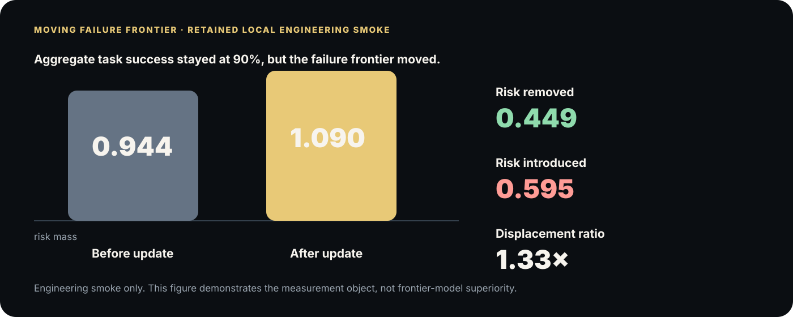

SORELIA
risk displacement while task success remained at 90%: introduced failure-frontier risk exceeded removed risk even though the aggregate success metric did not change.
A better success rate can hide a worse failure frontier.
The problem
Long-horizon agents fail through interacting mechanisms: grounding, state tracking, planning, memory, verification, recovery and safety. A scalar task-success score collapses those dynamics.
Why it is hard
Failure identities change across policy versions. A mechanism can shrink, split, merge or be replaced by a new one after the update that was supposed to fix it.
Why common loops miss it
Failure-driven training can optimize yesterday's errors without measuring compensating risk introduced elsewhere. Static curricula do not observe the movement of the failure distribution itself.
Model failure as a moving frontier, not a pile of bad trajectories.
SORELIA preserves failure-mechanism identity across policy updates, classifies how each mechanism changes, measures risk removed versus risk introduced, and uses that transition signal to allocate the next fixed verified-data budget.
Novel object
A longitudinal failure frontier with extinct, contracting, persistent, expanding and emergent mechanism states plus split/merge topology.
Novel training signal
Curriculum allocation depends on how failure risk moves across model versions—not only on present frequency, severity or difficulty.
Falsifiable thesis
If moving-frontier information does not beat strong static allocation under controlled real-agent experiments, the central hypothesis should be rejected or narrowed.
Evaluate → track → allocate → verify → train → re-evaluate.

What I designed and implemented.
Research formulation
Failure-frontier representation
Transition-aware curriculum
Evaluation and integrity stack
Interactive systems layer
Designed to make the hypothesis lose if it is wrong.
Tasks / splits
Local deterministic tasks, a 12-task real Chromium fixture, IID held-out evaluation and a deterministic shifted stress split. Paper-scale plan requires independently authored browser/desktop tasks and held-out environment families.
Baselines
Random synthetic, difficulty curriculum, human-balanced, failure-frequency and static failure-priority allocation under equal verified-data budgets.
Ablations
Static/no frontier adaptation, no exploration, single iteration, shuffled failure labels and random cluster assignments are executable. Data-path/model-specific ablations remain pending real post-training.
Statistical setup
Repeated trials per task, multiple seeds, paired bootstrap confidence intervals, paired permutation tests, exact/near-duplicate leakage checks and human-calibration packet/scorer.
Evidence is separated by tier.
The released numbers validate system behavior and expose failure dynamics. They are not claims of state-of-the-art computer-use performance.
Controlled curriculum engineering smoke
| Method | IID success | Shifted stress success | IID failures / task | Interpretation |
|---|---|---|---|---|
| SORELIA | 97.69% | 94.44% | 0.532 | No superiority claim |
| Static priority | 98.15% | 94.44% | 0.509 | Strong static control |
| Failure frequency | 96.30% | 96.30% | 0.625 | Best stress score in this smoke |
| Random | 96.30% | 94.44% | 0.523 | Fixed-budget baseline |
| Difficulty | 97.69% | 94.44% | 0.519 | Difficulty-only curriculum |
| Human-balanced | 99.07% | 94.44% | 0.398 | Best IID in this smoke |
Real Chromium fixture
| Tasks | Task success | Partial success | Recovery | Wall-clock latency | Model cost |
|---|---|---|---|---|---|
| 12 isolated browser tasks | 58.33% | 74.31% | 27 / 27 attempted recoveries succeeded | 958.9 ms mean / task | Unknown · not fabricated |
The useful signal is what changed after the update.

Wrong next action
In the retained browser trajectory, the policy chose D instead of A, corrupting the intermediate state. The recorded local correction recovered the subgoal.
Success stayed flat; risk got worse
In one local post-training smoke update, task success remained 90% while risk introduced (0.595) exceeded risk removed (0.449), producing a 1.33× displacement ratio.
Mechanism matching is not treated as ground truth
Some cross-round matches have low assignment margin. SORELIA exposes ambiguity and produces blank human-calibration packets rather than inventing validation.
Replay a real retained browser trajectory.
Correct → fail → recover → fail → recover
Five actions, two recorded memory failures, two successful local corrections, verified task completion.
Open trajectory replayTrajectory video
The video is a trajectory replay visualization tied to artifacts/browser_smoke.json; it is not a fabricated browser recording or frontier-model run.
What scales now—and what still needs real compute.
Reliability research should expose its own unsafe assumptions.
Irreversible actions
High-risk actions are intended for sandbox/mock execution unless an external environment supplies an explicit confirmation boundary. Catastrophic actions are tracked separately.
Permission boundaries
Provider, parser and infrastructure errors abort the experiment rather than being silently converted into model failures or training examples.
Human escalation
Ambiguous failure identity is surfaced for independent annotation. Human validation is not claimed until independent labels and agreement statistics actually exist.
Everything needed to audit the research path.
System architecture, matching, allocation, verification, safety and evidence boundary.Evaluation methodology
Repeated trials, paired statistics and interpretation rules.Provider integration
OpenAI/Anthropic adapter boundary and what was not executed.Usage accounting
Measured vs unknown token, latency and cost semantics.
Paper, code, benchmark, data and evidence.
Current research manuscript.Code / release
Executable repository and reproduction commands.Benchmark
Split identity, hashing and contamination contract.Dataset card
Trajectory/task schema and evidence boundaries.Interactive demo
Browser trajectory replay from retained artifact.Video
Evidence-grounded trajectory replay visualization from the retained Chromium fixture.Technical report
Engineering and methodology deep dive.Blog post
Public explanation: where do failures go after training?GitHub
Repository archive exists; public GitHub URL not published in this release.Novelty audit
Prior-work boundary and claims deliberately not made.Interview talk tracks
30-second, 60-second and five-minute explanations plus hard-question answers.
Polished surface. Messy scientific history.
SORELIA did not go idea → perfect implementation → amazing result. The retained path includes null results, regressions, a benchmark bug, ambiguous mechanism matches, false-precision cleanup, and several design pivots.
journaled experiments
Hypothesis → setup → result → interpretation → next decision.
failed assumptions
Including non-winning curricula, exploration regression, coarse matching, a comparison bug, and synthetic cost accounting.
major decisions
Each records alternatives, evidence, trade-offs and outcome.
Cite SORELIA.
Aura Yavary. SORELIA: Tracking and Training the Moving Failure Frontier of Interactive Agents. 2026.